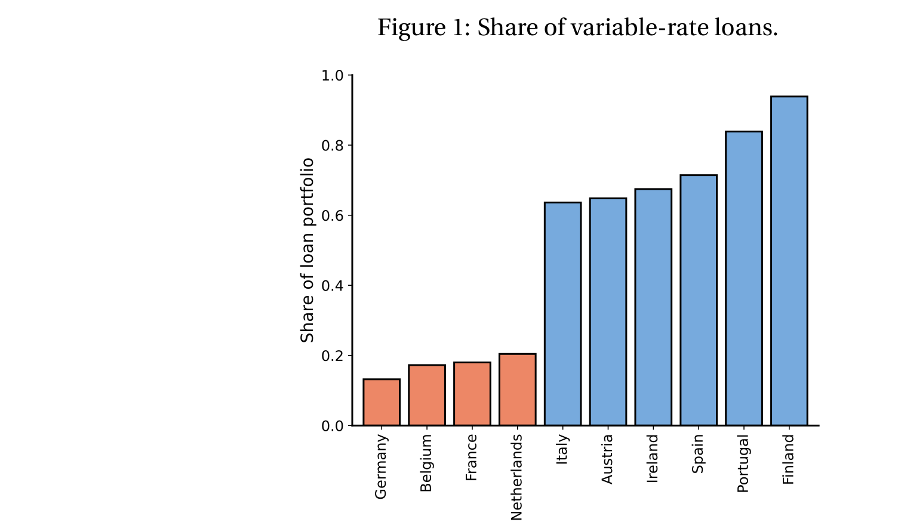
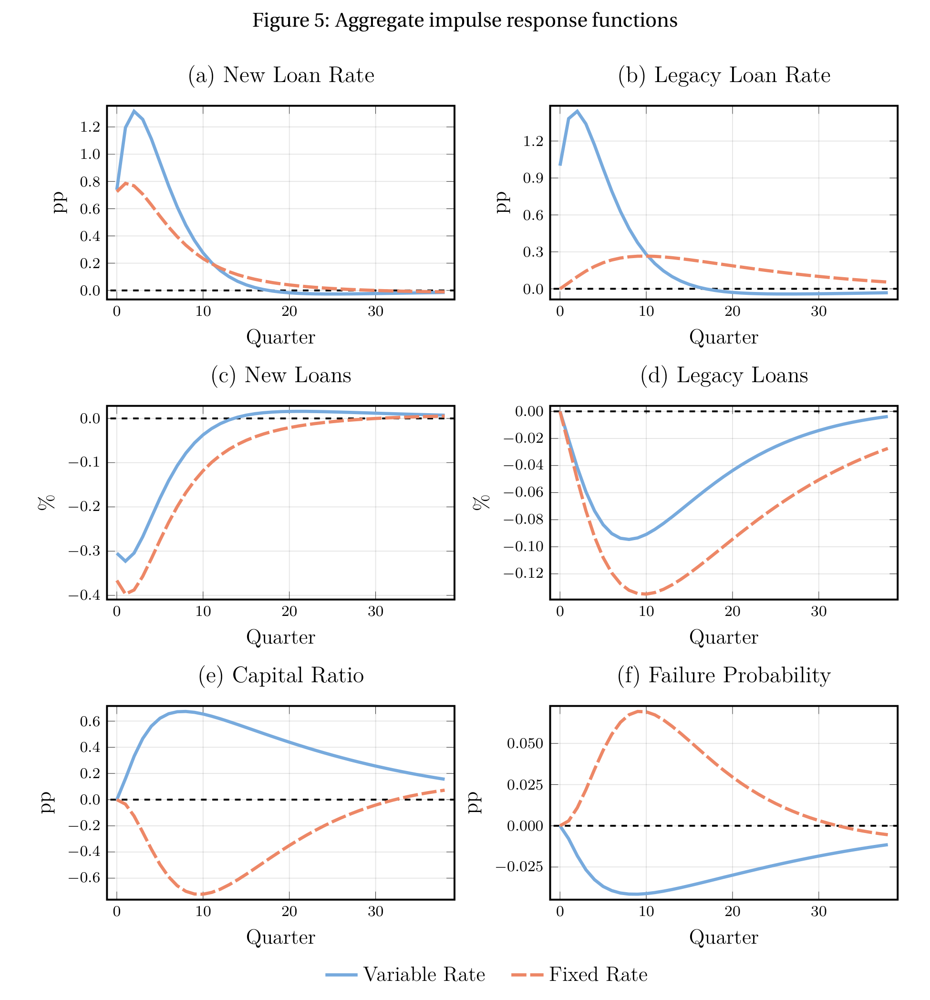
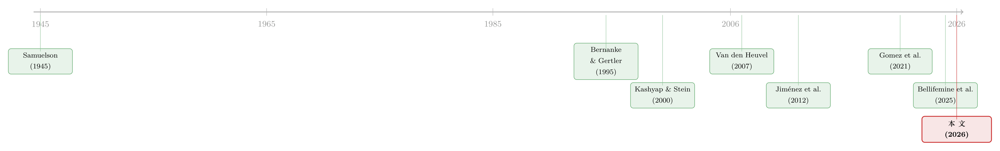

同样的加息，为什么德国的银行和西班牙的银行走向相反？
本文读的是 Abad, Bigio, Garcia-Villegas, Marbet & Nuño (2026, NBER Working Paper No. 35239)：他们用一个异质性银行的定量宏观模型证明，固定利率与浮动利率两种银行体系在货币政策传导上的差别，本身并不重要——只有当「银行偿付能力」这根弦绷紧时，差别才真正显现。校准到欧元区后他们发现，由于大量银行就贴着监管资本线运转，这种差别在数量上举足轻重：加息时固定利率体系的信贷弹性比浮动利率体系大约大三分之一，而且固定利率体系里银行的倒闭率会上升、浮动利率体系里反而下降。
1 一个让欧央行睡不着的问题
先讲一个画面。2022 到 2023 年，欧洲央行（ECB）以几十年未见的速度连续加息。政策利率是统一的——法兰克福开会，整个欧元区一起调。可是这同一记加息落到不同国家的银行身上，结果却大相径庭。
为什么？因为欧元区有一个被人们说滥、却很少被认真建模的制度差异：贷款利率到底是固定的，还是浮动的。在比利时、法国、德国、荷兰，银行习惯把贷款利率在发放那一刻就锁定，签了就是一辈子（固定利率，fixed-rate，下称 FR）；而在奥地利、芬兰、爱尔兰、意大利、葡萄牙、西班牙，贷款利率每期跟着政策利率重定价（浮动利率，variable-rate，下称 VR）。这不是某家银行一时的选择，而是沉淀了几十年的国别惯例，黏性极强、几乎改不动。

图 1：可变利率贷款占比，按国家排序 —— 德、比、法、荷（橙，固定利率）极低，意、奥、爱、西、葡、芬（蓝，浮动利率）高
于是 ECB 的政策制定者心里就有了一个挥之不去的疑问，Lane（2023）也公开点了出来：同样一记加息，会不会因为这种事前就存在的利率风险敞口差异，而在不同国家产生系统性不同的反应？如果会，那货币政策和宏观审慎政策就得重新考虑怎么配合。
这正是本文要回答的问题。而它给出的答案，颇有几分反转的味道。
2 先泼一盆冷水：一个「无关性」基准
按照直觉，FR 和 VR 当然不一样——固定利率的银行扛着满身的利率风险，加息时它的存量贷款一分钱多挣不到，融资成本却噌噌往上涨；浮动利率的银行则可以把利率风险转嫁给借款人。这差别难道还不够大吗？
本文偏偏不急着顺着这个直觉走。它做的第一件事，反而是先证明一个无关性结果（irrelevance result）——在一个干净的基准世界里，FR 和 VR 对货币政策传导的影响完全一样。
逻辑是这样的。一笔边际贷款之所以创造价值，是因为它给一个正净现值的项目融了资；但它同时也消耗了发放成本和融资资源。现在的关键在于：只要银行和借款人用同一个贴现因子来折现未来的还款，那么把还款现金流"重新计时"——是现在多收还是以后多收——并不会改变这笔贷款的联合贴现剩余。FR 和 VR 无非是两种把同一块蛋糕在银行和借款人之间切分的方式，蛋糕本身没变大也没变小。
这其实就是 Modigliani-Miller 定理的味道，只不过被收窄到了"银行贷款合约该怎么结构化"这件事上。换句话说，关于这一点，可以参见我们此前那篇讨论资产定价中现值比较的文章——《贴现率：资产定价的中心议题》——本文里银行的放贷决策，本质上也是一次「边际融资成本 vs. 边际放贷收益」的现值较量。这个味道，Kashyap & Stein（1995）早就尝过：当非存款融资成本与货币政策无关时，银行信贷渠道是失灵的。Van den Heuvel（2007）又往前推了一步：即便银行不能自由增发股本，只要它离监管限制足够远，信贷渠道的强度也可以与银行资本无关。
本文的无关性，是把这条线再往前续了一节：即使 FR 和 VR 会产生不同的权益（equity）动态，只要银行始终资本充足，货币政策对信贷的均衡反应在两种体制下也可以一模一样。
别小看这个看似扫兴的基准。它不是一个理论上的小聪明，而是一面镜子——它告诉你：现实中之所以会观察到 FR 和 VR 的差异、之所以低资本银行反应更猛，恰恰是因为这个无关性失效了。失效的那个临界点在哪？答案就两个字：偿付。
3 模型：当偿付能力成为那根绷紧的弦
无关性的反面，给出了本文真正的核心命题：利率风险敞口的异质性是否重要，最终是一个数量问题——它取决于校准后的模型里，到底有没有足够多的银行挤在监管资本线附近。要回答这个，就得把模型搭起来。
3.1 设定
这是一个无穷期、离散时间的经济，四类主体：代表性家庭、一群企业家、一个连续统的竞争性银行（指标 \(j\in[0,1]\)），以及一个合并的政府。银行在有限责任下运营，由风险中性的银行家管理，主观贴现因子 \(\beta\in(0,1)\)，目标是最大化分给股东（家庭）的贴现红利。
银行做的是期限转换：用短期的零售存款、批发债务和靠留存收益积累的权益，去为长期贷款融资。这一活动同时让它暴露在信用风险和利率风险之下。
贷款是长期的。沿用 Leland & Toft（1996）的设定，每笔贷款以独立同分布的概率 \(\delta\in(0,1)\) 到期，因此平均贷款久期为 \(1/\delta\)。此外，银行还面对特质性违约风险：每期有一比例 \(\omega_{jt+1}\) 的贷款组合违约，\(\omega_{jt+1}\) 抽自一个均值为 \(E[\omega]=p\) 的时不变分布 \(F(\omega)\)；违约时银行只收回本金的 \(1-\lambda\)，\(\lambda\) 是违约损失率。于是存量贷款组合的运动方程为：
$$L_{jt+1}=(1-\omega_{jt+1})(1-\delta)(L_{jt}+N_{jt})$$
直觉很清楚：明天的存量贷款，等于今天的总贷款（存量 \(L_{jt}\) 加新发放 \(N_{jt}\)），扣掉到期的和违约的那部分。
接着，一个自然的问题是：FR 和 VR 的差别在符号上体现在哪？体现在存量贷款的平均利率上。对 FR 银行，新贷款利率 \(r^N_t\) 在发放时锁定、终生不变，存量组合的平均利率 \(r^L_{jt}\) 是新老贷款按余额加权：
$$r^L_{jt}=\frac{r^L_{jt-1}L_{jt-1}+r^N_{t-1}N_{jt-1}}{L_{jt-1}+N_{jt-1}}$$
对 VR 银行，锁定的不是利率而是利差 \(s^N\)，实际利率是 \(r^N_t=r^M_t+s^N_t\)，随政策利率 \(r^M_t\) 浮动；它的存量收益率是 \(r^L_{jt}=r^M_t+s^L_{jt}\)，利差 \(s^L_{jt}\) 同样按余额加权演化。
这一个小小的差别，正是整篇文章的命门。
3.2 核心机制就藏在利润里
银行的权益只能靠留存收益积累（不能外部增发股本）：\(E_{jt+1}=E_{jt}+(1-\tau)\Pi_{jt+1}\)，\(\tau\) 是公司税率。而税前利润 \(\Pi_{jt+1}\) 长这样——这是理解全文最该盯住的一个方程：
看清楚 a1 这一块净利息边际（net interest margin, NIM），故事就讲完了一大半。当政策利率 \(r^M\) 上升：负债端的存款利率 \(r^D\) 和批发利率 \(r^B\) 都跟着涨，融资成本噌噌往上；可对 FR 银行来说，存量贷款的 \(r^L_{jt}\) 是锁死的，资产端的利息收入纹丝不动。一上一下，NIM 被压缩，权益被侵蚀。而 VR 银行恰恰相反：\(r^L_{jt}=r^M_t+s^L_{jt}\) 跟着政策利率一起涨，存量贷款的利息收入随加息变多，利差走阔，权益反而被夯实。
这就是关键的反转：同一记加息，对 FR 银行是失血，对 VR 银行是补血。 不只是幅度不同，连符号都相反。
3.3 让"失血"变得性命攸关的，是那条监管红线
但失血本身还不足以改变放贷决策——如果银行家底厚，少赚点利息无非是少分点红利。真正让它致命的，是资本监管。本文设定：违约实现后，一旦银行权益跌破其存活贷款组合的一个比例 \(\gamma\in(0,1)\)，银行就被处置（破产）。也就是说，存活的条件是 \(E_{jt}\ge\gamma L_{jt}\)。
这条线不会事前直接约束银行的选择，而是通过延续价值起作用——它让"破产"成为今天放贷决策的一个可能后果。把上面所有要件装进贝尔曼方程，单个银行的值函数为：
$$V_t\big(L_{jt},E_{jt},x_{jt}\big)=\mathbf{1}_{\{E_{jt}\ge\gamma L_{jt}\}}\max_{\{N_{jt},M_{jt},D_{jt},B_{jt}\}}\beta\int_0^{\bar\omega_{jt+1}}\!\Big[(1-\chi)V_{t+1}\big(L_{jt+1},E_{jt+1},x_{jt+1}\big)+\chi E_{jt+1}\Big]dF(\omega_{jt+1})$$
这里 \(x_{jt}=r^L_{jt}\)（FR）或 \(x_{jt}=s^L_{jt}\)（VR），\(\chi\) 是外生退出概率，\(\bar\omega_{jt+1}\) 是不致破产的最大违约率。式子前面那个示性函数 \(\mathbf{1}_{\{E_{jt}\ge\gamma L_{jt}\}}\) 就是那根绷紧的弦：贴近它的银行，多放一笔贷款会抬高破产概率，从而压低延续价值——这就是本文反复强调的、放贷决策里的审慎动机。
一个值得称道的技术细节：尽管模型有长期贷款的年份结构、特质违约、凸性发放成本、流动性与资本双重约束，作者证明银行的全部决策只取决于两个状态变量——杠杆，和一个"遗留定价状态"（FR 是平均贷款利率，VR 是平均合约利差）。这种简约让模型既可与数据透明对照，又便于移植到别的问题上。
3.4 把无关性翻译成一句定价话
为什么说"只有偿付能力相关时差别才出现"？在那个无银行破产、银行与企业家用成比例贴现因子的基准里（命题 1），作者推出了一条供给侧定价关系：
$$r^N_t=s^N_t+\frac{\sum_{m=0}^{\infty}\Lambda^B_{t,m}\,r^M_{t+m}}{\sum_{m=0}^{\infty}\Lambda^B_{t,m}}$$
读出来就是：固定利率 = 浮动利差 + 未来政策利率的（按银行估值核加权）平均。只要这条关系成立，FR 的还款流和 VR 的还款流在银行眼里就具有相同的贴现价值，两种体制给出完全相同的均衡放贷序列 \(\{N_t\}\)。无关性，正是这条等式成立的同义词。而一旦银行逼近监管红线、破产风险开始扭曲它对远期现金流的估值，这条等式就被打破——FR 和 VR 的传导随之分道扬镳。
4 量化：欧元区，以及那条左尾
那么，数量上到底重要吗？答案取决于校准后的资本分布里有没有足够多的银行挤在红线附近。
作者把模型校准到欧元区。校准的目标矩是一些总量指标，但模型对资本充足率分布"左尾"的（未被校准的）拟合，才提供了回答本问题所需的横截面纪律。结论是：异质性确实在数量上举足轻重，但仅仅因为有相当一批银行就贴着偿付门槛运转。这种贴线的状态来自两股力量：一是凸性的贷款发放成本，让银行无法瞬间调整资产负债表；二是特质性违约冲击，让银行无法完全掌控自己的杠杆。
值得一提的是，欧元区银行其实会用衍生品对冲利率风险，且比美国同行用得多（Hoffmann et al., 2018; Begenau, Piazzesi & Schneider, 2025）。但 Hoffmann et al.（2018）与 Guerrini & Rice（2025）记录到，真正参与对冲的欧洲银行通常也只抵消了表内敞口的约 25% 到 40%——大多数银行仍然实打实地暴露在利率风险之下。这就为"把利率风险敞口当作预定变量"的建模选择提供了现实依据。
5 主要结果：三分之一的鸿沟，与一次干净的反事实
把机制和校准合在一起，三条核心结果浮出水面。

图 5：货币紧缩的总量脉冲响应 —— 蓝实线为浮动利率(VR)、橙虚线为固定利率(FR)。注意新增贷款(c)、资本充足率(e)、倒闭概率(f)在两种体制下方向相反
第一，放贷弹性的鸿沟。 加息时，FR 银行因 NIM 压缩而权益受损，高杠杆者被推向红线、收缩信贷；VR 银行则利差走阔、重建缓冲、扩张信贷。由于体制内所有银行面对相同的融资成本和新贷款利率，真正区分它们的，是存量组合的盈利如何改变它们与红线的距离。落到总量上，新增放贷对货币政策的弹性，在 FR 体系里大约比 VR 体系大三分之一。这一不对称的方向，与 Gomez, Landier, Sraer & Thesmar（2021）的经验证据一致。
第二，金融稳定的反向分化。 这是最具张力的一条：同样的紧缩，会抬高 FR 体系里银行的倒闭率，却降低 VR 体系里的倒闭率。利率风险敞口的差别，不只是放贷多寡的差别，更是金融稳定方向的差别。
第三，一次干净的反事实把因果钉死。 为了证明这道鸿沟确实来自"贴线的银行"，作者构造了一个压低特质风险的反事实——红线附近的银行质量被大幅抹去。结果是：两种经济体的放贷反应变得几乎无法区分。这就直接说明：驱动 FR/VR 放贷差异的，正是内生的银行脆弱性，而非利率风险敞口本身。无关性基准在这里得到了最有力的数量印证。
6 落到政策：协调，与渐进
机制一旦讲透，政策含义就水到渠成，且都指向一个意思——别让银行贴着红线挨打。
其一，宏观审慎与货币政策需要协调。作者展示，在紧缩周期里释放资本要求（放松监管缓冲）会拉大银行与偿付门槛的距离，从而缩小 FR 与 VR 之间的信贷反应差距。两种工具，需要配合着用。
其二，为货币政策的渐进主义提供了金融稳定层面的理由。比较那些累积力度相同、但路径不同的加息方案，作者发现：更渐进的紧缩能大幅降低 FR 体系的倒闭率，同时几乎不增加 VR 体系的倒闭率。原因恰恰在于，渐进避免了那种把 FR 银行猛地推向红线的、急促的权益损失。
7 文献脉络
这条研究线的来路，其实相当清晰。
银行信贷渠道的源头是 Bernanke & Gertler（1995）：货币政策通过改变银行供给信贷的意愿或能力来影响实体经济。有意思的是，本文脚注追溯到更早的 Samuelson（1945）——他当年甚至认为银行在加息时是占便宜的，因为贷款重定价比存款快；今天看，这恰恰是 VR 的直觉，而 FR 的世界正好相反。
接着，Kashyap & Stein（1995, 2000）确立了一个关键事实：信贷渠道的强度在银行间是异质的。后续研究沿两个维度展开。一是资本维度：低资本银行传导更强（Jiménez, Ongena, Peydró & Saurina, 2012; Dell'Ariccia, Laeven & Suarez, 2017; Altavilla, Canova & Ciccarelli, 2020）。二是利率风险维度：利率风险敞口更大的银行传导更强（Gomez et al., 2021; Altunok, Arslan & Ongena, 2024）。其中 Gomez et al.（2021）最关键——它证明了两个维度之间存在交互：在财务受约束、且利率风险敞口大的银行身上，传导最强。这恰恰是本文模型的核心机制的直接经验对应物。

然后，一批定量银行模型从不同摩擦切入：Bianchi & Bigio（2022）从结算摩擦与存款挤提，Begenau, Landvoigt & Elenev（2026）从无保险存款的挤兑风险，Coimbra & Rey（2023）从宽松如何把资产推向最高杠杆的中介。与本文最近的是 Bellifemine, Jamilov & Monacelli（2025）：他们的异质性银行新凯恩斯模型也强调"贴近资本约束的银行质量"决定了对货币冲击的反应——本文与之共享这一洞见，但有两点不同：本文银行发放长期贷款，货币政策通过存量组合的 NIM 影响权益演化；更重要的是，本文比较 FR 与 VR，发现两者权益反应的差别不仅在幅度、更在符号。
而真正关键的一步，是把这一切续到 Van den Heuvel（2007）那条"无关性"的线上：他证明只要银行离监管限制够远，渠道强度可与资本无关；本文把它推进了一步——即便 FR 与 VR 的权益动态不同，只要银行足够资本充足，传导也可以相同。本文（2026）所站的位置，正是这条无关性线与那条异质性经验线的交汇点。
评论与延伸（Q&A + 研究方向）
(a) 几个可能的疑问
Q：所谓"无关性"，跟 Modigliani-Miller 是一回事吗？
是一脉相承，但被收窄了。MM 说的是企业资本结构在无摩擦时不影响价值；本文的无关性专讲"银行贷款合约该如何结构化（固定还是浮动）"，并且保留了银行外部融资和贷款的摩擦。它的关键前提是银行与借款人用成比例的贴现因子折现，且银行远离监管红线。所以它不是"什么都无关"，而是"在偿付不绑定时，重定时无关"。
Q：FR 银行扛着更大的利率风险，难道不应该一开始就更脆弱吗？为什么要靠加息才显现？
因为脆弱性是内生且状态依赖的。在平稳状态，FR 和 VR 银行可以都活得好好的；真正点燃差别的是加息这个冲击——它让 FR 银行 NIM 压缩、权益缩水，把本就贴线的那批银行推过临界点。没有冲击、没有红线，敞口大小只是账面数字，不改变放贷。
Q："加息降低 VR 体系倒闭率"这个结论是不是太反直觉了？
表面反直觉，机制上却顺理成章。VR 银行的存量贷款利率随政策利率上行，加息直接让它的利息收入和利差变多、权益变厚，于是离红线更远、更不容易倒。直觉之所以反，是因为我们习惯把"加息"等同于"压力"——但压力是落在融资端的，对资产端能同步重定价的 VR 银行，加息反而是顺风。
Q：把利率风险敞口当作"预定变量"，会不会丢掉了重要的内生选择？
这是本文主动做的取舍，也是它与 Varraso（2025）的分野。Varraso 让中介通过选择不同久期的资产来内生地选择利率风险敞口；本文则认为，贷款账簿的久期结构变化缓慢、且被制度惯例（尤其欧元区的国别定价规范）强烈塑造，因而把敞口当作预定的，专问"这些事前差异何时在数量上重要"。对欧元区这个问题，这个取舍是合理的；但若研究银行如何主动调整敞口，就需要别的框架。
Q：模型怎么保证批发债务在均衡里是无风险的？
靠一组参数限制。作者假设批发债务要么优先于存款，要么以银行资产抵押，再对各融资来源的相对规模和违约时的回收率施加限制，使批发债务回报在均衡中实际无风险（详见其附录 A.1）。零售存款则由政府全额保险。
Q：这套结论对美国适用吗，还是只是欧元区故事？
机制是普适的，校准是欧元区的。欧元区之所以是天然实验场，是因为统一货币政策叠加了国别层面持久的 FR/VR 定价惯例，制造了横截面上干净的敞口差异。美国按揭以长期固定利率为主、且证券化与对冲更发达，机制方向一致但数量未必照搬——这恰恰是可以接着做的事。
(b) 几个可能的研究问题与提案
1. 把机制搬到公司债与信用市场
【经济故事】本文讲的是银行贷款的 FR/VR，但公司债市场同样有固定票息与浮动票息之分，且持有人（保险、共同基金、外资）的久期与资本约束差异巨大。加息时，持有大量固定票息存量债的中介是否也会因"NIM/估值压缩 → 逼近约束 → 抛售"而放大信用利差？ 【可行性】中。需要 TRACE 的债券层面交易数据、Mergent FISD 的票息结构、以及持有人层面的 eMAXX/NAIC 数据。识别可用货币政策意外（高频）作为冲击，比较固定/浮动票息存量占比不同的中介的卖压。难点在于把"中介约束"度量干净。
2. 外资持有人是稳定器还是放大器？
【经济故事】本文强调"贴近资本约束的银行质量"决定反应强度。外资持有人通常不受本地资本监管约束，加息时的反应函数可能与本地银行正交。那么外资占比高的信用市场，传导是被熨平还是被放大？ 【可行性】中。需跨国的持有人国别分解（如 ECB 的 SHS、或债券层面的外资持有比例）。识别上可借欧元区"同一货币政策、不同外资渗透"的横截面，做类本文的体制比较。诚实地说，外资敞口的内生性（资金会流向高息国）是主要威胁。
3. 流动性约束 vs. 资本约束，谁主导信贷反应？
【经济故事】本文同时有流动性要求（\(M\ge\theta(D+B)\)）和资本要求（\(E\ge\gamma L\)），但驱动 FR/VR 鸿沟的是资本线。一个自然的问题：当流动性约束（如 LCR）也时紧时松，两条约束的相对绑定如何改变传导？ 【可行性】高（理论）/ 中（实证）。理论上直接在本文模型里做约束比较静态即可；实证上可利用 2010s 以来 LCR 引入的政策时点，做 DiD。数据用监管报表（如 FR Y-9C 或欧洲的 COREP）。
4. 渐进主义的最优速度
【经济故事】本文表明渐进紧缩降低 FR 体系倒闭率。但"多渐进才最优"是个未解的规范问题——太慢会牺牲通胀控制。能否在本文框架里求解一条同时权衡通胀目标与金融稳定的最优政策路径？ 【可行性】中。需要把模型嵌入一个有名义刚性的新凯恩斯外壳，并设定央行损失函数。计算量不小，但模型只有两个状态变量这一点大大降低了难度，doable。
5. 对冲的内生选择与不完全性
【经济故事】文中引用的证据显示欧洲银行只对冲了 25%–40% 的敞口。为什么不对冲到位？是市场摩擦、监管套利，还是 Di Tella & Kurlat（2021）式的"主动保留敞口"？把对冲决策内生化后，本文的 FR/VR 鸿沟会被熨平多少？ 【可行性】中。需要银行层面的衍生品头寸数据（如 EMIR 交易库、或美国的 call reports 衍生品科目）。识别对冲的因果作用较难，但描述性地刻画"对冲缺口与加息时放贷收缩的相关性"是可行的第一步。
我的判断
这篇文章最漂亮的地方，是它把一个看似经验性的问题（FR 和 VR 到底差多少）先用理论收窄成一个数量问题，再用校准去回答。无关性基准不是花架子，而是整篇论文的逻辑支点：它告诉你差异从哪里来、又在何处消失；而那个"压低特质风险"的反事实，干净利落地把因果钉在了"内生银行脆弱性"上，而非利率敞口本身。模型只靠两个状态变量就装下了如此丰富的结构，可移植性强，这是定量宏观银行模型里难得的克制。
要说对识别的担忧，主要有三点。其一，核心结论高度依赖资本分布左尾的拟合——而左尾恰恰是数据最稀薄、最难校准、也最容易被极端值左右的地方；"有多少银行贴着红线"这个量，几乎单枪匹马地决定了三分之一这道鸿沟的大小，它的稳健性值得更多压力测试。其二，把利率风险敞口当作预定变量，回避了对冲与久期选择的内生反应；在 25%–40% 这个对冲缺口本身会随利率环境变化的世界里，预定假设可能高估了 FR 体系的脆弱。其三，"一记加息"的脉冲响应和"一条渐进路径"的福利比较，依赖于家庭与企业家那一侧相对简约的设定，传导到实体的部分还可以更结实。
接下来我最想看到的，是把这套机制直接拿去对微观数据——尤其是欧元区银行层面的放贷与权益动态——做一次外样本检验：模型预测的、跨 FR/VR 国别的放贷弹性差异，在 2022–2023 那轮真实加息里，量级对得上吗？如果对得上，这篇论文就不只是一个优雅的"实验室"，而是真正能进政策室的工具。
参考文献
- Abad, J., Bigio, S., Garcia-Villegas, S., Marbet, J., & Nuño, G. (2026). The Heterogeneous Bank Lending Channel of Monetary Policy. NBER Working Paper No. 35239.
- Altavilla, C., Canova, F., & Ciccarelli, M. (2020). Mending the broken link: Heterogeneous bank lending rates and monetary policy pass-through. Journal of Monetary Economics.
- Altunok, F., Arslan, Y., & Ongena, S. (2024). Interest-rate risk and the bank lending channel.
- Ampudia, M., & Van den Heuvel, S. (2022). Monetary policy and bank equity values in a time of low and negative interest rates. Journal of Monetary Economics.
- Begenau, J., Piazzesi, M., & Schneider, M. (2025). Banks' risk exposures.
- Begenau, J., Landvoigt, T., & Elenev, V. (2026). Uninsured deposits and bank run risk.
- Bellifemine, M., Jamilov, R., & Monacelli, T. (2025). The heterogeneous-bank New Keynesian model.
- Bernanke, B., & Gertler, M. (1995). Inside the black box: The credit channel of monetary policy transmission. Journal of Economic Perspectives 9(4), 27–48.
- Bianchi, J., & Bigio, S. (2022). Banks, liquidity management, and monetary policy. Econometrica 90(1), 391–454.
- Coimbra, N., & Rey, H. (2023). Financial cycles with heterogeneous intermediaries. Review of Economic Studies.
- Dell'Ariccia, G., Laeven, L., & Suarez, G. (2017). Bank leverage and monetary policy's risk-taking channel. Journal of Finance 72(2), 613–654.
- Gomez, M., Landier, A., Sraer, D., & Thesmar, D. (2021). Banks' exposure to interest rate risk and the transmission of monetary policy. Journal of Monetary Economics 117, 543–570.
- Hoffmann, P., Langfield, S., Pierobon, F., & Vuillemey, G. (2018). Who bears interest rate risk? Review of Financial Studies 32(8), 2921–2954.
- Jiménez, G., Ongena, S., Peydró, J.-L., & Saurina, J. (2012). Credit supply and monetary policy. American Economic Review 102(5), 2301–2326.
- Kashyap, A., & Stein, J. (1995). The impact of monetary policy on bank balance sheets. Carnegie-Rochester Conference Series on Public Policy 42, 151–195.
- Kashyap, A., & Stein, J. (2000). What do a million observations on banks say about the transmission of monetary policy? American Economic Review 90(3), 407–428.
- Leland, H., & Toft, K. (1996). Optimal capital structure, endogenous bankruptcy, and the term structure of credit spreads. Journal of Finance 51(3), 987–1019.
- Samuelson, P. (1945). The effect of interest rate increases on the banking system. American Economic Review 35(1), 16–27.
- Van den Heuvel, S. (2007). The bank capital channel of monetary policy. Working paper.
- Varraso, P. (2025). Monetary policy and endogenous interest-rate risk exposure.